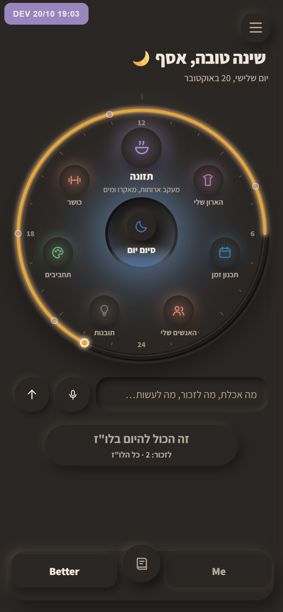
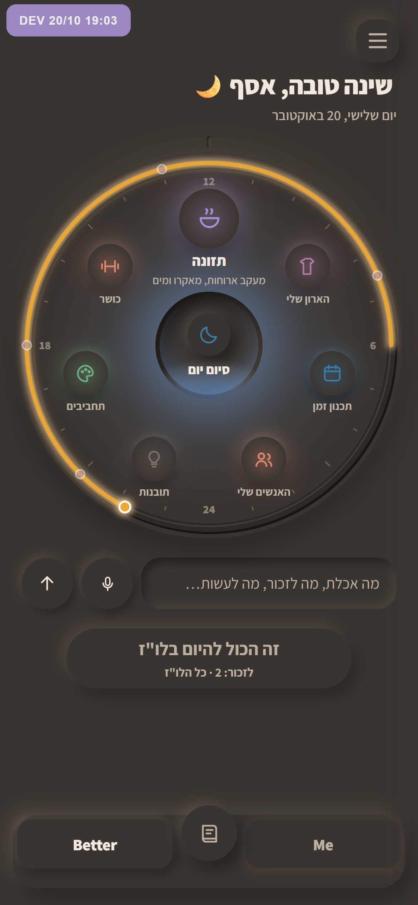
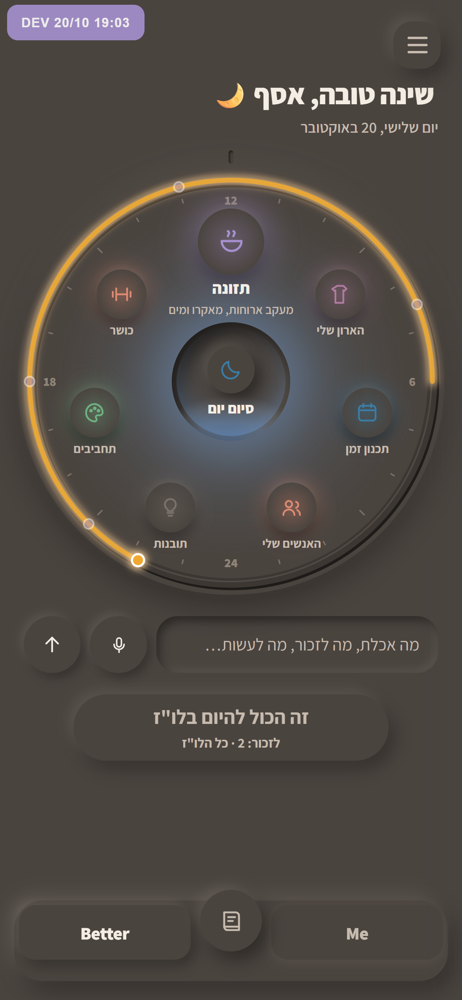
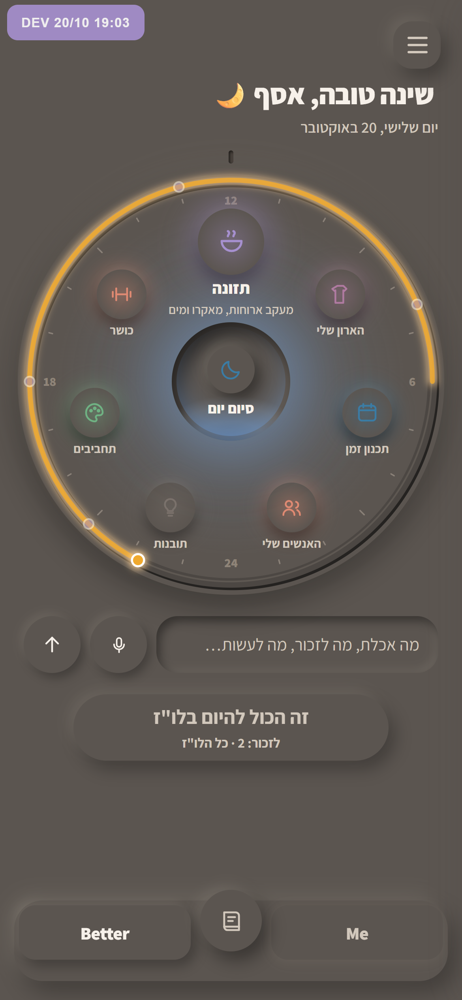

הלילה, פחות שחור
אותו לילה, ורק החומר בהיר יותר. המנורה במרכז והאורות הקטנים לא השתנו. אלה צילומים של האפליקציה האמיתית בעשר בלילה.

מה שיש עכשיו
#2a2623, כמעט שחור.

1 · דמדום
צעד אחד בהיר יותר. עדיין לילה, פחות כבד.

2 · צפחה
אפור־חם בינוני. האורות עדיין בולטים.

3 · ערפל
הכי בהיר. כבר פחות "לילה" ויותר "ערב מעונן".
כדי לבחור, כתוב לי 1, 2 או 3.